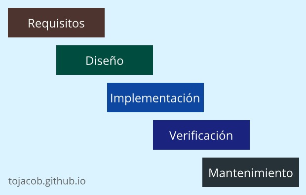
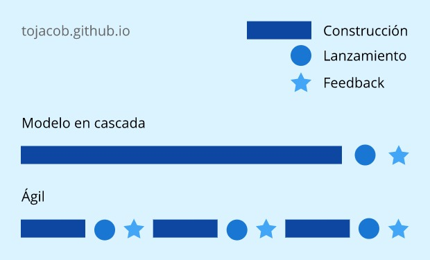

Sincera introducción a las metodologías Ágiles
Por Jacob Samuel G.
Recientemente he leído varios libros, artículos y experiencias que comparten aquellos gurús sobre las metodologías ágiles. Es mucha información, muy emocionante si disfrutas aprender, pero rápidamente se vuelve tedioso debido a la agobiante cantidad de conceptos, algo simple puede convertirse en una cosa muy compleja, sobre todo cuando estas comenzando. Por ese motivo he querido escribir este artículo. Mi objetivo es presentarte la esencia fundamental de Ágil.
Para entender correctamente que es “Ágil”, primero debemos comprender porque lo necesitamos. Tenemos que entender el problema y acercarnos al origen de la solución.
Un poco de historia
A principios de los 90s, el software comenzaba a abrirse paso a través de soluciones empresariales. Sin embargo, las cosas estaban saliendo muy mal, tan mal que esta etapa es conocida como “The application development crisis,” o “Application delivery lag”, en español seria algo como: "La crisis del desarrollo de aplicaciones” o “El retraso en la entrega de aplicaciones”.
Esto ya nos da una idea del problema que existía en aquella época. Es difícil de creer, pero existió un tiempo en el que conseguir una aplicación no era tan fácil como descargarla desde la App Store.
Las aplicaciones que salían al mercado, si es que lograban salir, casi siempre fracasaban, excedían los presupuestos o simplemente no resolvían correctamente los problemas de los usuarios finales.
Esta crisis se originó por diversos motivos, uno de ellos era la dificultad de distribuir el software, ahora solo es cuestión de clics, pero en el pasado, la entrega se hacía a través de disquetes, CDs o descargas en conexiones telefónicas de 50kb/s. No era nada divertido.
El motivo principal de aquella crisis eran las metodologías que se utilizaban para desarrollar aplicaciones. Las empresas tecnológicas habían adaptado los modelos de manufactura tradicionales a los procesos de creación de software.
La mayoría de proyectos solían ejecutarse en una serie de etapas secuenciales, conocidas como “Waterfall model”. El modelo en cascada consistía en aproximadamente 5 pasos.
El problema de este modelo, es que, como su nombre lo dice, los pasos van en cascada. Una vez concluido un proceso, no se podía volver atrás.
A simple vista no parece un gran problema, tener una serie de pasos ordenados para desarrollar software es una buena idea, y eso era exactamente lo que se creía. Sin embargo, la gran cantidad de fracasos en la industria demostraron que algo se estaba haciendo mal, muy mal.
Necesitábamos una solución
Seguir el mismo camino no era una buena idea. A finales de los 90s, un grupo de ingenieros se dio cuenta de esto, ellos asumieron que tendría que haber una forma mejor de hacer las cosas. Diecisiete de ellos se reunieron un largo fin de semana en Utah, comenzaron a debatir y trazar soluciones que resolvieran el problema que estaba enfrentando la industria tecnológica.
Descubrieron que, en el centro de todo desarrollo, se encontraba la incertidumbre. Ellos notaron que el desarrollo de software estaba lleno de dudas en todas sus etapas. Concluyeron que producir una aplicación no era lo mismo que producir bolígrafos o autos.
Las cosas materiales pueden medirse de maneras muy puntuales, pero el software es diferente, no se puede predecir su estado final y es complicado saber el nivel de complejidad que alcanzará. Lo más retador de todo, es que no se podía saber si el producto seria bien recibido por los clientes, hasta que estuviera terminado. Por lo tanto, hacer uso de los procesos de manufactura y diseño tradicionales no tenía ningún sentido.
En lugar de desarrollar un modelo de manufactura, los autores de Ágil decidieron crear una filosofía.
Estas personas tenían experiencia, sabían que muchas cosas pueden interferir en el desarrollo de software. Las condiciones del mercado pueden cambiar, las tecnologías pueden evolucionar, un competidor puede adelantarse a nuestro producto, entre muchas otras circunstancias que alteran el desarrollo.
Por lo anterior y para lidiar con toda la incertidumbre, estos ingenieros comenzaron a proponer el trabajar en ciclos cortos y pausar al final de cada etapa para reflexionar sobre lo logrado, lo aprendido, los nuevos hallazgos y los siguientes pasos a tomar.
Ellos plantearon que todos los datos recolectados durante estas etapas nos ayudarían a decidir qué dirección seguir. ¿Los datos acumulados son positivos?, entonces continuamos hacia la misma dirección. ¿La retroalimentación indica que la ruta es defectuosa?, entonces hay que cambiar de rumbo. Y esto, fue conocido como “Ser ágiles”.
Dejaron a tras los largos procesos de desarrollo y comenzaron a distribuir el software en ciclos cortos, para que los usuarios pudieran ayudar a mejorar el producto, mientras lo utilizaban.
Simple y poderoso
Como te habrás dado cuenta, Ágil es muy sencillo de entender, pero no por eso deja de ser poderoso. Ágil es simple por naturaleza y no se trata de pasos técnicos o tácticas elaboradas.
Ágil es una filosofía, una forma de pensar para hacer software de manera eficiente. Tú mismo puedes leer la documentación oficial del Manifiesto Ágil, para darte cuenta de ello. Al final del post te dejaré el enlace oficial en español. Es un manifiesto con 12 principios clave, asentados sobre 4 valores fundamentales. Un documento que no puedes omitir si estas trabajando en la industria tecnológica.
¿Dónde queda Scrum? ¿Y Design Thinking? ¿Qué pasa con Lean?
Como ya hemos visto, Ágil no una metodología como tal, se trata de una forma de pensar. Debido a esto y para agregar un poco de estructura, se crearon diversas metodologías basadas en el “Manifiesto Ágil” que permiten trabajar de forma “ordenada” aplicando las mejores practicas en los equipos de desarrollo.
En otras palabras. Las metodologías ágiles son herramientas que ayudan a implementar la filosofía Ágil dependiendo del entorno de trabajo.
¿Porque digo “dependiendo del entorno de trabajo”? Sucede que, no es lo mismo desarrollar software en una empresa que esta empezando con 5 empleados, que desarrollar software en una gran empresa con cientos de empleados especializados. En ambos casos se requerirán metodologías diferentes.
Hay algunos problemas muy comunes que se dan debido a esto, como empresas pequeñas que quieren implementar metodologías complejas y empresas grandes que quieren implementar modelos más sencillos.
Es una gran ironía, pero a dado paso a nuevos oficios. Como, por ejemplo, el de consultores que se dedican exclusivamente a implementar estas herramientas en las empresas.
El problema es que algunos empresarios suelen pensar que aplicar estos métodos de manera rígida en la empresa, es suficiente para que todo funcione de maravilla. Como ya hemos visto, Ágil plantea lo contrario.
Debemos analizar bien la situación y elegir la metodología que se adapte mejor a nuestro proyecto. Aunque mezclarlas puede ser tentador, lo más recomendado, no por mí, sino por aquellos que saben lo que dicen, es no hacerlo.
En mi caso, he decidido especializarme en Lean, una metodología ágil que funciona muy bien en proyectos emergentes. Es perfecta para startups y pymes. He escrito un articulo sobre esta metodología que quizá pueda interesarte.